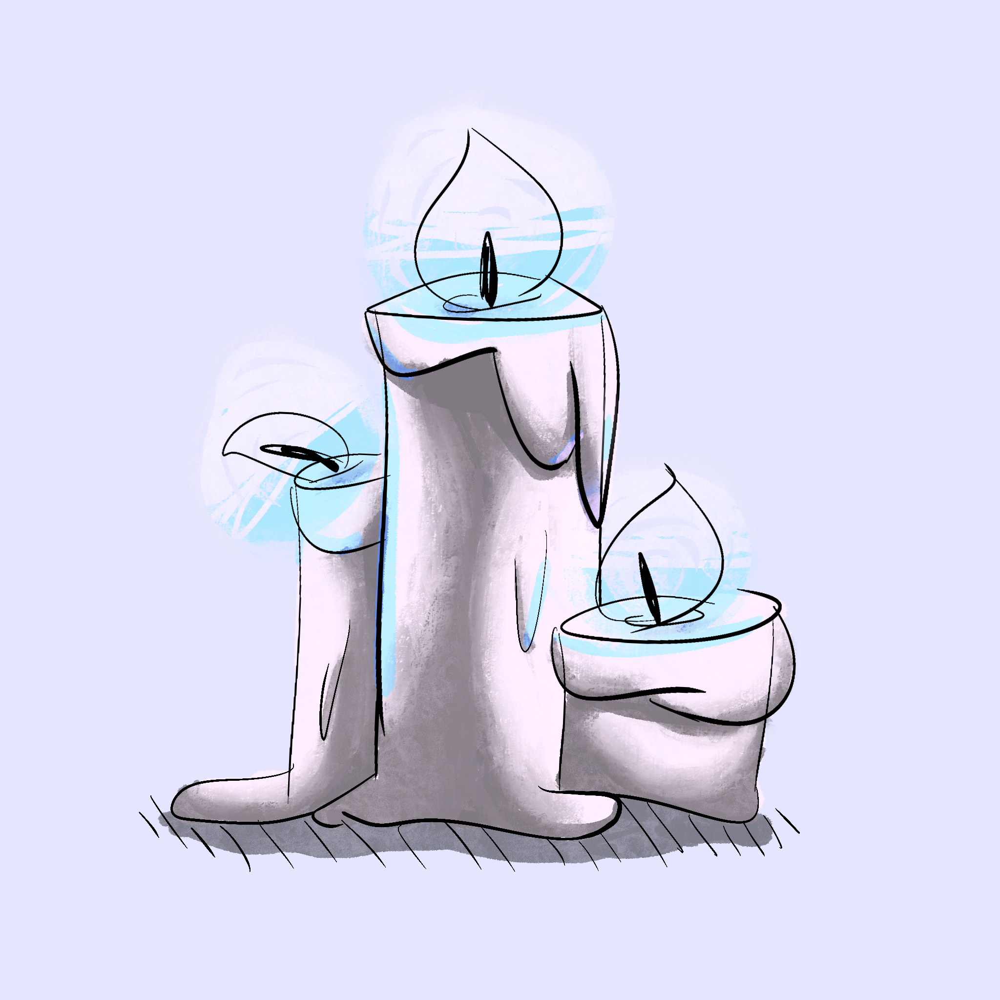

As not only a budding interface designer, I also enjoy improving my artistic skills as a hobby. Which -- unshockingly -- shares many skills with UI/UX design. Such as color!
I love messing around with color. As Leatrice Eiseman concisely summarizes in her book The Complete Color Harmony: Pantone Edition, every color conveys a unique mood. Take that quick sketch of candles I whipped up for example; isn't the warm light soothing? The orange and yellow colors make the candles seem inviting -- a warm light you could have during a relaxing night or candlelit dinner. But the exciting part is what happens when you alter the image...
It's so fascinating what now users experience from this image with only a hue shift of the colors, everything else left untouched. The light blue glow of the fire is now eerie. It certainly isn't a natural light for a candle anymore. Maybe, it's hinting at a supernatural presence.
This is why I love designing. Knowing how to manipulate shades and hues to make the cues have entirely different meanings is a powerful tool to have. Colors are such an exciting phenomenon that I'm glad to be able to experience.